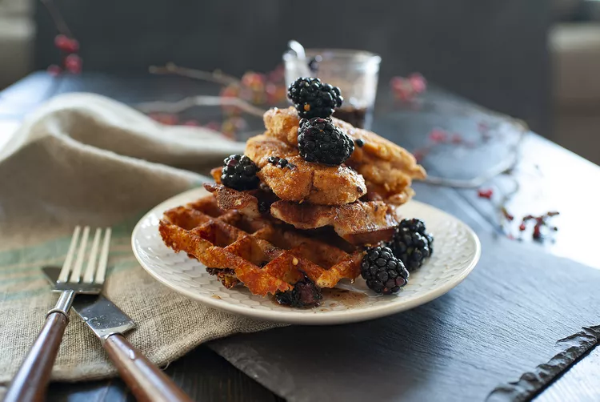

Donuts

Spicy Gluten-Free Chicken and Cheddar Waffles with Blackberry-Maple Syrup Recipe
These crispy Cheddar waffles combine with chicken tenders and a spicy blackberry-muddled maple syrup for a sophisticated version of a classic Southern dish that's also gluten free!
Ingredients
Syrup
- 4 fresh blackberries
- 1 teaspoon ancho chile powder
- ¼ teaspoon red pepper flakes
- 1 cup pure maple syrup
Chicken
- 2 pounds chicken tenders
- 1 orange, zested and juiced
- salt and ground black pepper to taste
- ½ cup coconut flour
- ½ cup almond flour
- 1 teaspoon minced garlic
- 1 teaspoon smoked paprika
- 2 ¼ cups gluten-free all purpose baking flour
- 1 tablespoon baking powder
- ½ teaspoon dried rosemary
- ½ teaspoon ground thyme
- ¼ teaspoon sea salt
- cooking spray
- 1 stick butter, softened
- 1 tablespoon maple syrup
- 1 cup shredded sharp Cheddar cheese
- 3 eggs
- 1 ¾ cups almond milk
- ¼ cup blackberries for garnish
Steps
- Muddle 4 blackberries in the bottom of a microwave-safe glass serving jar. Add chile powder and red pepper flakes, then maple syrup; stir syrup briskly until well combined.
- Place chicken in a large, shallow baking dish. Drizzle with orange juice and season liberally with salt and pepper. Refrigerate until needed. Whisk orange zest with coconut flour, almond flour, garlic, and paprika. Set dredging mixture aside.
- Mix gluten-free flour, baking powder, rosemary, thyme, and sea salt together in another bowl to start the waffle batter.
- Preheat the oven to 400 degrees F (200 degrees C). Preheat a waffle iron according to manufacturer's instructions and spray with cooking spray.
- Beat butter and maple syrup together in a bowl using an electric mixer until creamy. Add eggs 1 at a time. Gradually add the gluten-free flour mixture and milk in 3 alternating batches. Stir in Cheddar cheese just until combined. Pour batter into the preheated waffle iron. Cook until crisp and deeply brown, 6 to 8 minutes per waffle. Place waffles on a baking sheet and keep warm in the preheating oven while preparing chicken.
- Line another baking sheet with parchment paper. Gently shake excess orange juice off each chicken tender and press all sides into the reserved coconut flour mixture. Place coated chicken on the prepared baking sheet. Remove waffles from oven and keep warm.
- Bake chicken in the preheated oven, flipping halfway, until browned on both sides, about 20 minutes total. An instant-read thermometer inserted into the center should read at least 165 degrees F (74 degrees C).
- Microwave syrup until warm, about 1 minute. Top each waffle with a warm chicken tender or two and a handful of blackberries. Drizzle with the warmed spicy maple syrup.